Executive monitoring
Month-to-date tonnage against target, weekly progress, rainfall per plantation group and model accuracy on one screen, plus rolling forecast, conformity and a satellite yield map.
Machine learning · Agentic AI · Decision support
A yield intelligence platform for a large pineapple plantation: ML forecasts, traceability reports, long-term planning and an AI agent that people reach from the web, WhatsApp and Microsoft Teams.
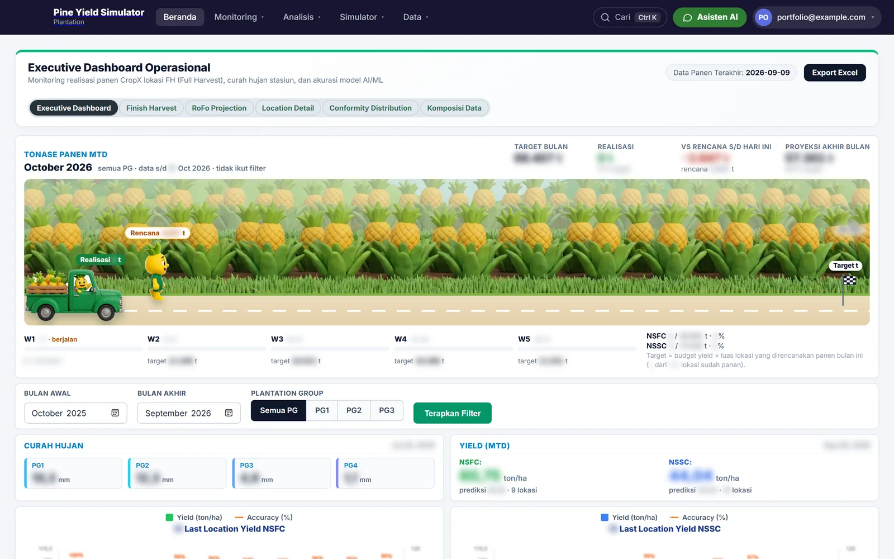
01 / THE CONTEXT
Harvest planning brings together agronomic parameters, sensor readings, rainfall, field notes and several versions of the forecast. Planners need to compare ML predictions with the production plan and actual harvests, understand why a location under-performed, and plan years ahead, often from a phone in the field.
I built one platform that connects forecasting, traceability, planning and reporting, then put an AI agent on top that answers questions with real data and real model inference. The same agent is available in the web app, on WhatsApp and in Microsoft Teams, and a hybrid command center lets AI workers prepare analyses that people approve before anything is sent.
02 / THE PRODUCT
Month-to-date tonnage against target, weekly progress, rainfall per plantation group and model accuracy on one screen, plus rolling forecast, conformity and a satellite yield map.
Three CatBoost model families cover early planning, yield diagnosis and near-harvest forecasts per crop cycle. Retraining is monthly and MAPE-gated, so a new model only goes live when it is more accurate.
Explains why each location’s yield came out as it did: benchmarks, field notes and AI lessons learned, turned into ready-to-present slide decks and monthly emails for every plantation group.
Multi-year projections with six scenarios, target feasibility, land needs across commodities and rotation simulation, with weather adjustment that can be switched on or off.
Change agronomic inputs and compare the prediction, scan sensitivity, search for settings toward a target yield, or predict many locations from one Excel file.
Pulls from the field sensor platform, the analytical data platform and the field management app, reads daily harvest reports straight from a mailbox through Microsoft Graph, and writes forecasts back as fact tables.
03 / CONVERSATIONAL AI
The agent is a LangChain agent on Amazon Bedrock with 39 domain tools: ML inference, read-only SQL on the data platform, application data, a knowledge base and a sandboxed chart renderer. Every channel shares the same tools, limits and audit log.
Streamed answers with tables, charts and downloadable Excel, right next to the dashboards. Sign-in with Microsoft Entra ID.
Server-sent eventsField staff ask from their phone and get text, images and charts back. Only registered numbers can talk to the bot.
Linked-device gateway on ECSPersonal and group chat through Azure Bot Service. Requests are verified, queued and answered asynchronously, so Teams never times out.
Bot Framework webhook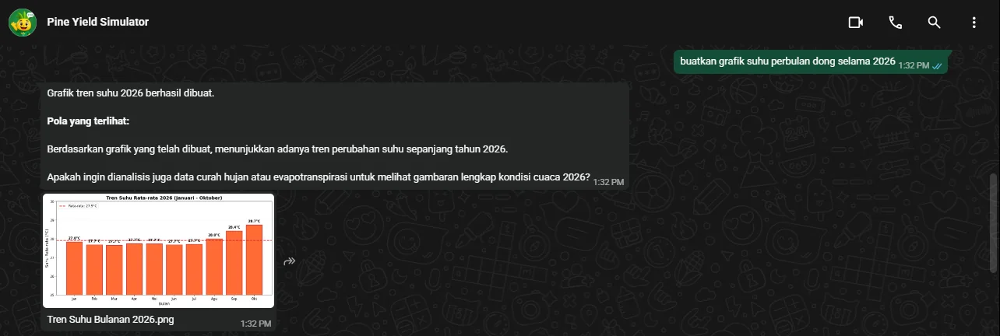
Example request
“What should we improve so this location reaches its target yield?”
The agent retrieves the location’s parameters, runs baseline and what-if inference, compares them with the best locations of the same category and explains the difference. A number guard rejects any figure that did not come from a tool result, and recommendations stay decision support for the agronomy team.
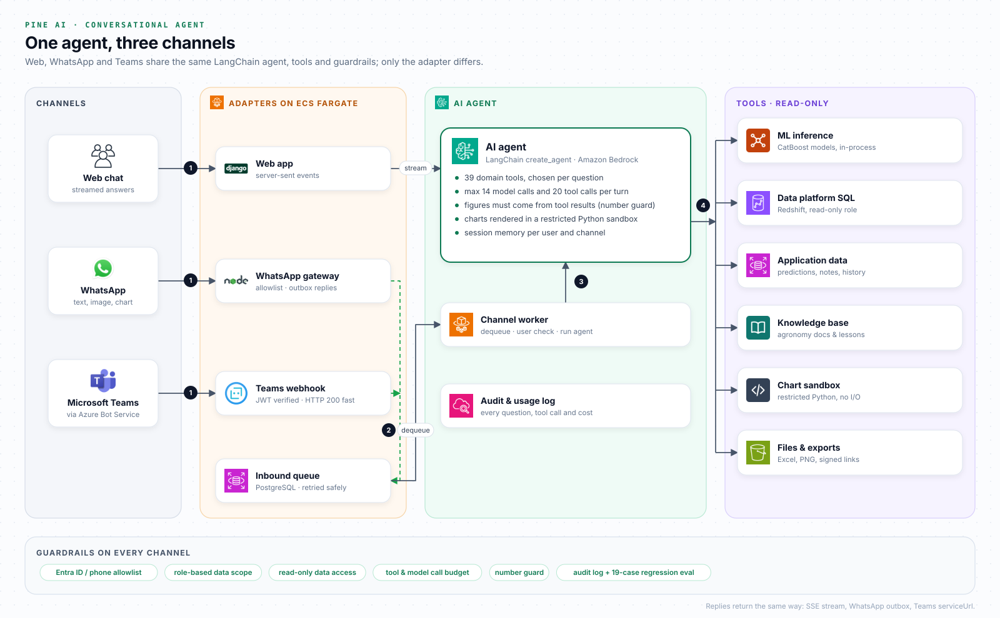
04 / HYBRID COMMAND CENTER
A 3D virtual office shows the AI workers and their missions on a kanban board. A mission can come from the office itself, or from Teams and WhatsApp with a /tugas command.
An orchestrator on Amazon Bedrock AgentCore splits the mission and hands it to AI workers that retrieve data and write the analysis. People review the draft and approve, revise or reject it before the result is emailed or posted back to chat. Guardrails, read-only tools and a JSON audit trail cover every step.
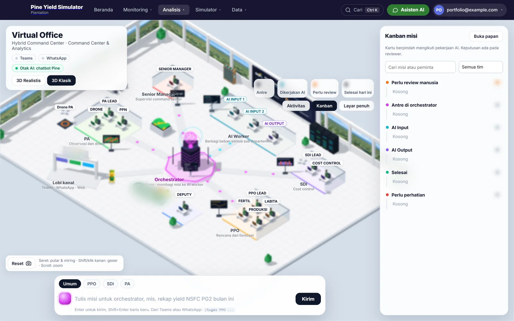
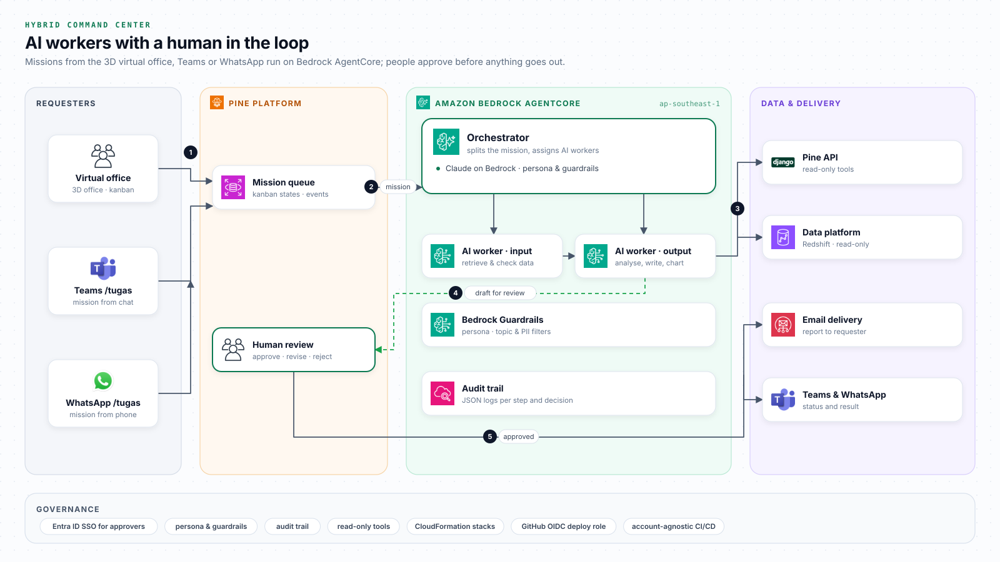
05 / INSIDE THE APPLICATION
Captured from the application. Figures, location codes and company branding are blurred or removed.
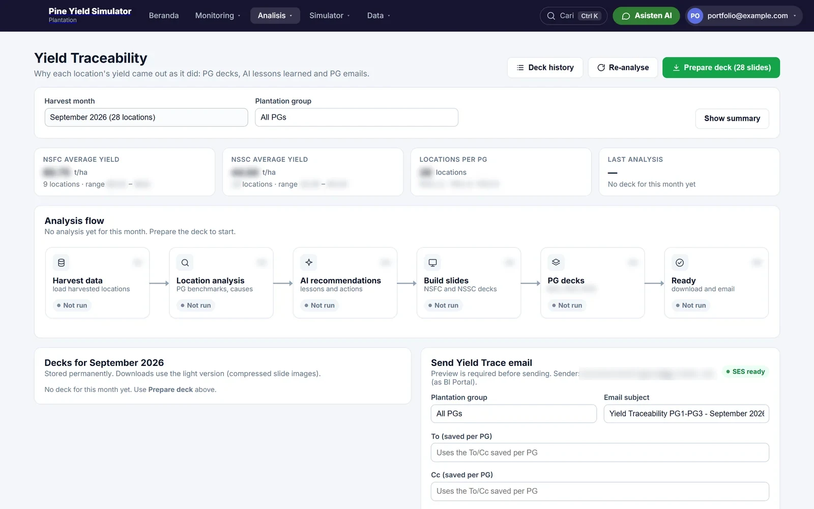
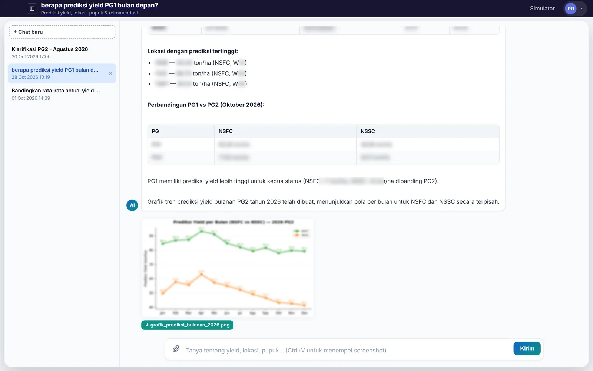
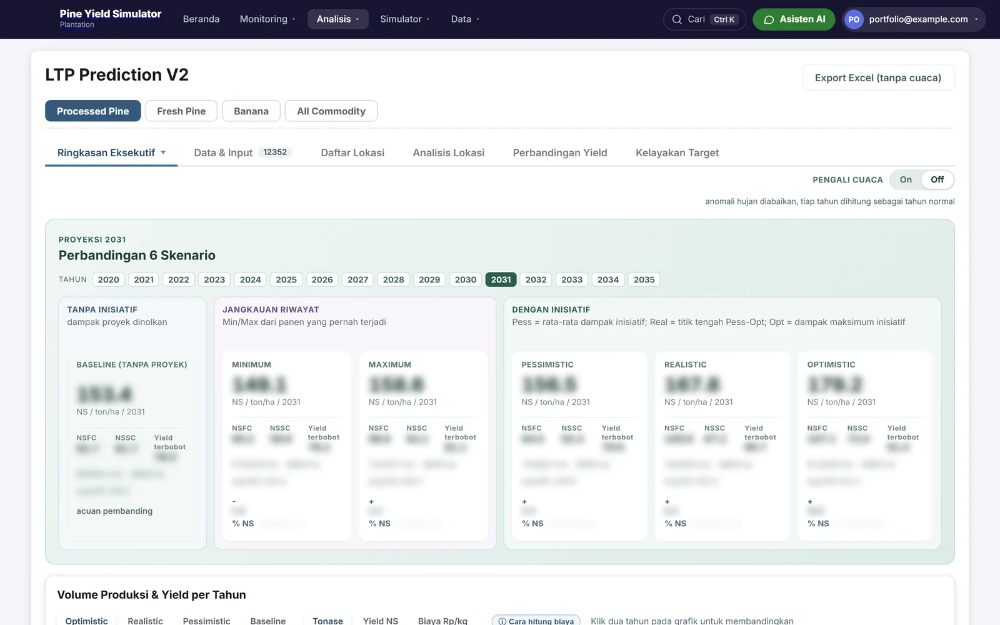
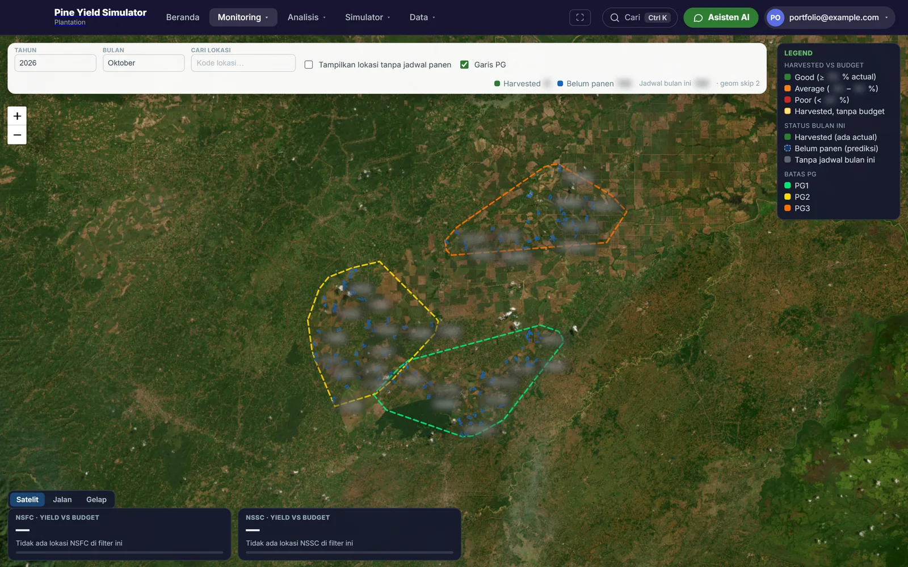
06 / UNDER THE HOOD
Everything runs on AWS in a shared ECS Fargate cluster behind one load balancer: the Django web app, the channel worker for the agent, the WhatsApp gateway and the scheduled forecast pipeline. PostgreSQL holds application state and message queues, S3 keeps models and decks, Bedrock powers the agent and SES sends the reports. Microsoft Entra ID handles sign-in and Azure Bot Service connects Teams.
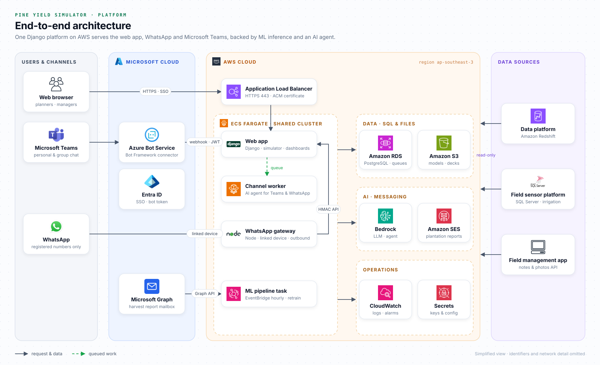
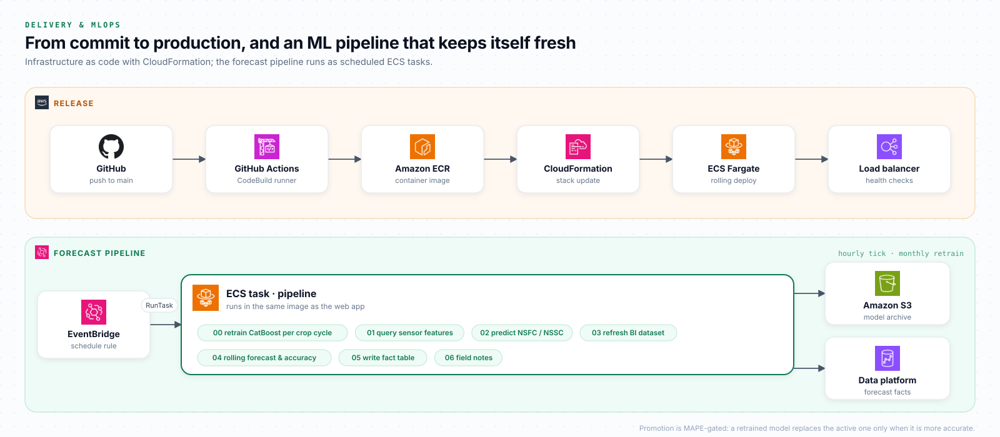
Simplified views for this case study; infrastructure identifiers and environment-specific configuration are omitted.
07 / MY CONTRIBUTION
I built Pine Yield Simulator as a solo developer: gathering requirements with planners and managers, designing the architecture, building the AWS infrastructure as code, implementing frontend and backend, training and operating the models, and integrating the AI agent and its channels.
The work covers the full lifecycle, from the first requirement to production monitoring, regression evaluation of the agent and ongoing improvements requested by the business.
08 / WHAT THIS ENABLES